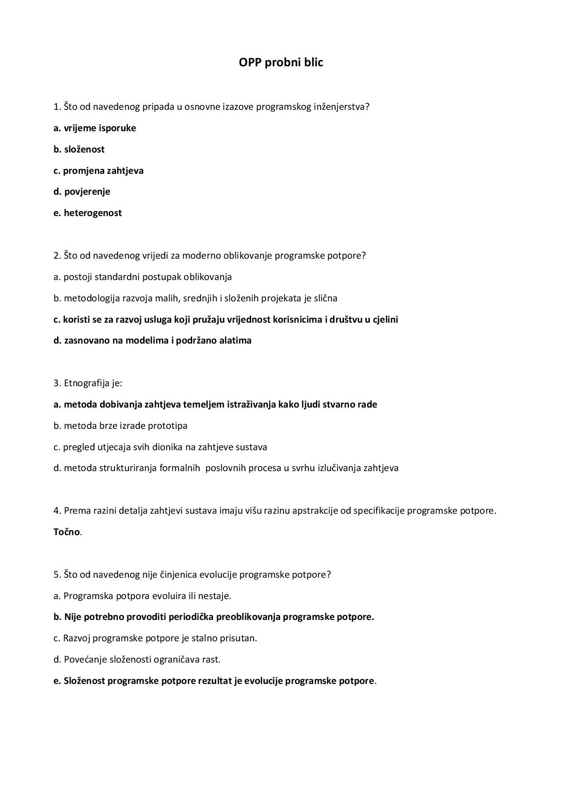
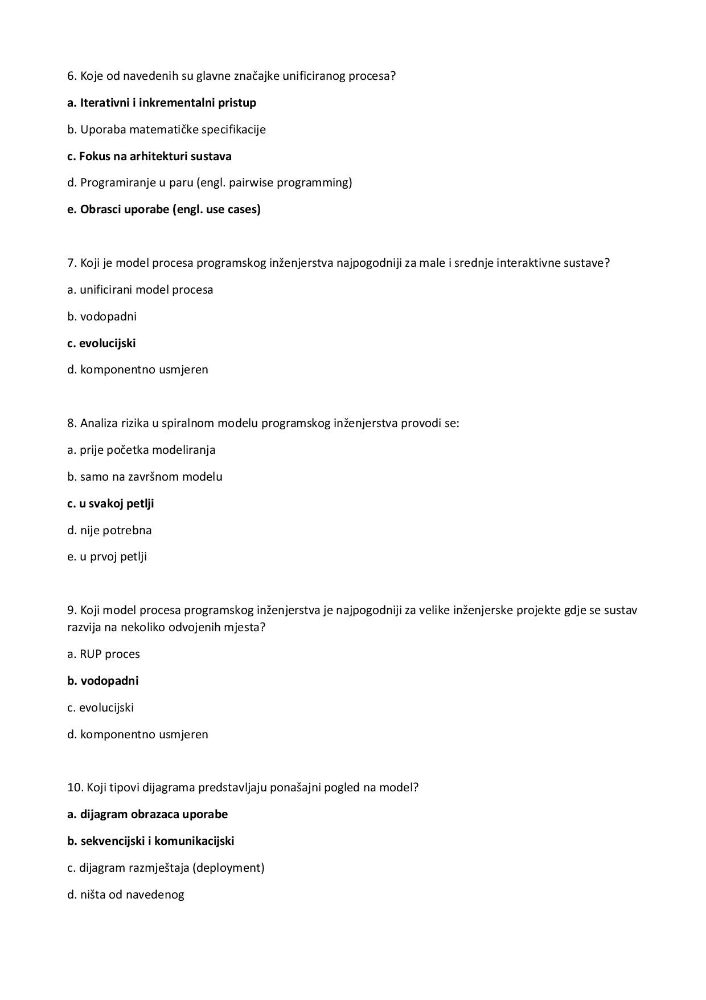
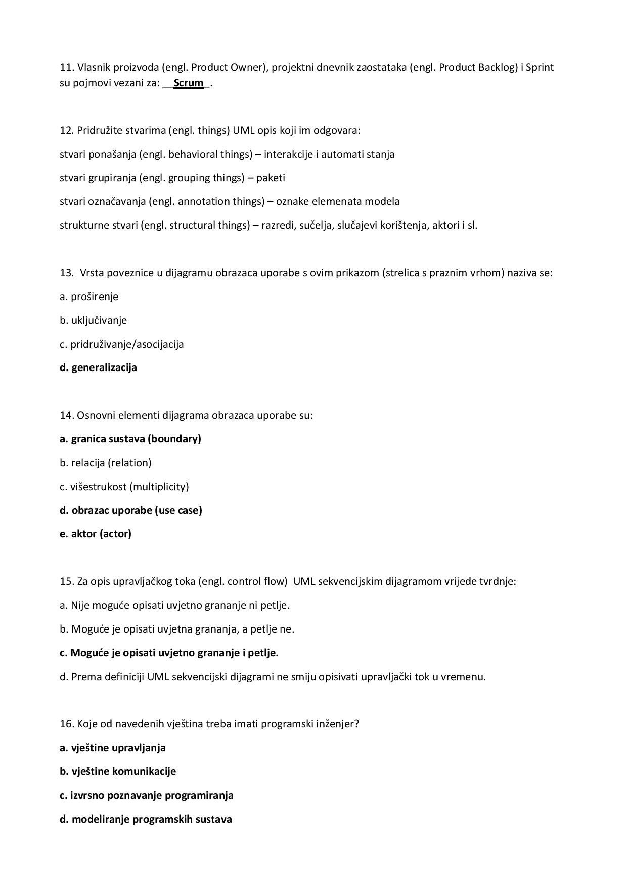
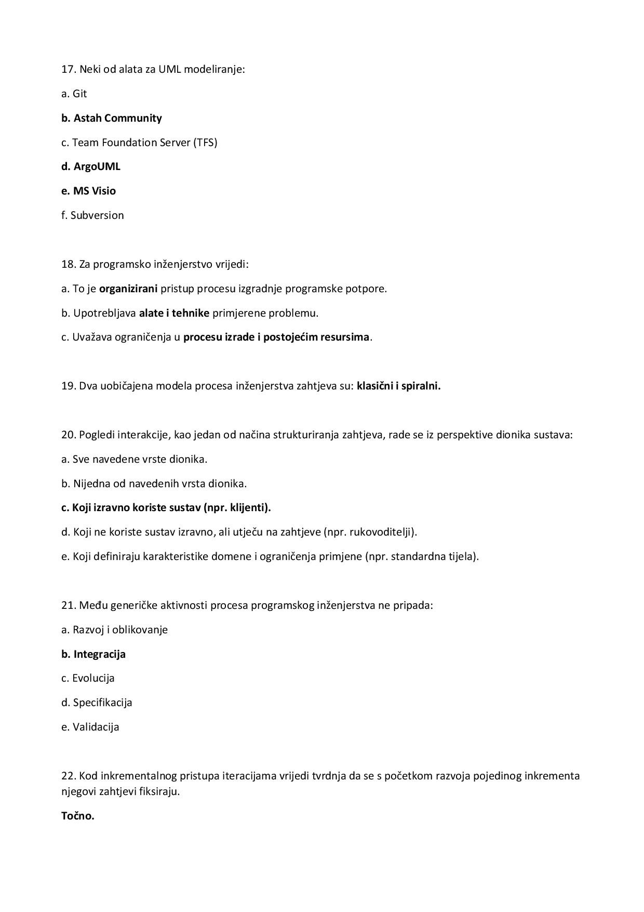
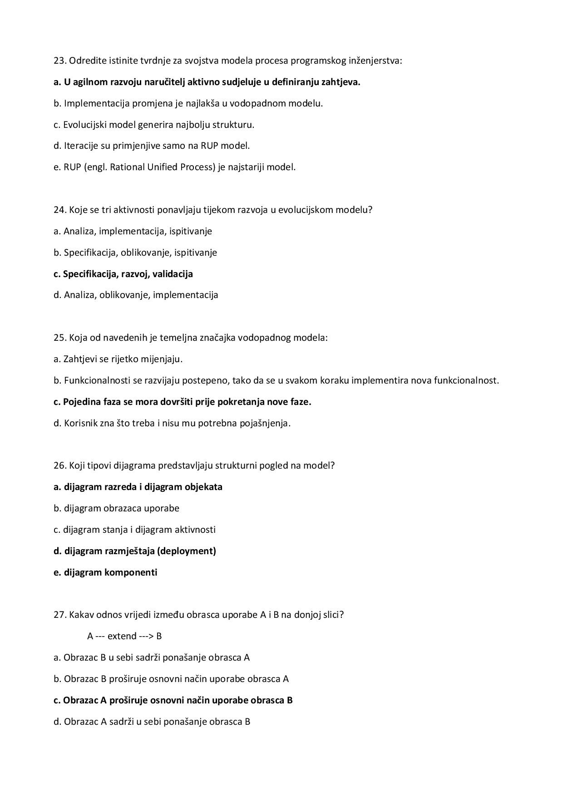
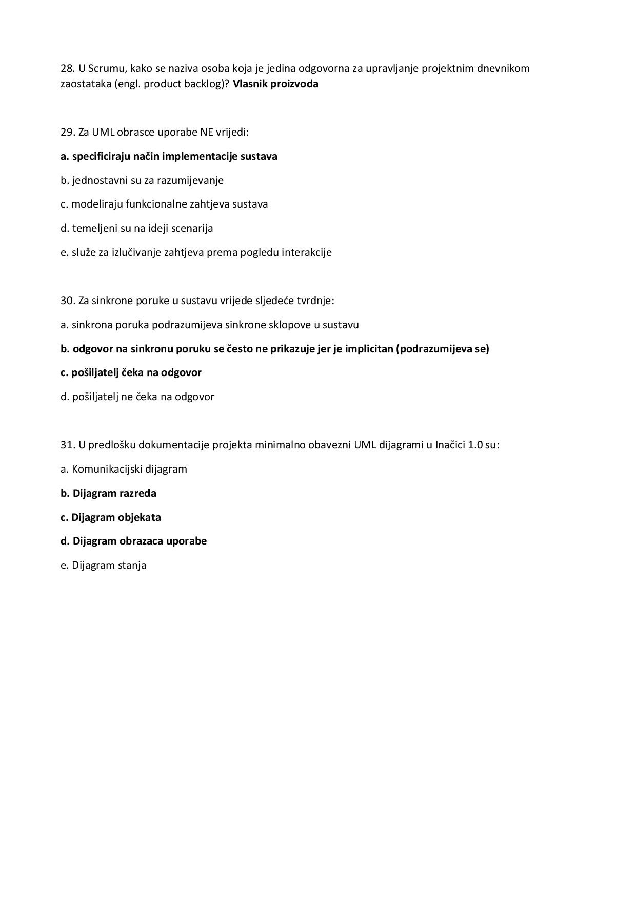
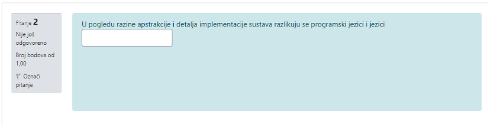
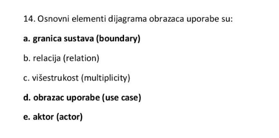

shit da zab sam da istice u petak. Jel moze onda netko za nas idiotke koji nismo rjesavali screenove poslat plz
Spuk      
 koji bi bio odgovor ovdje?
*** modeliranja
Jel rijesio mozda netko blic da podijeli iskustva 😁
LucidDreamer većina pitanja su iz zadataka za vježbu, meni je bilo jedno koje nije ovdje
Bambi kako si dosao do ovog file-a?
Aquaman prijatelji i ja smo skupili pitanja koja smo imali za vježbu…
I ako nekome nije radio link, sad je ažuriran pa opet radi😃
dado Nema
Zar ne bi ovdje trebalo ići i relacije?

MGJ Stavila sam točne odgovore onako kako su mi bili na moodle rješenju, iako sam vidjela u prezentaciji da su navedene i relacije pa ne znam što je točnije.
U dokumentaciji obrazaca uporabe je li potrebno svaki put kada sudjeluje baza to eksplicitno istaknuti?
feudalac Mi smo to uvijek napisali za svaki UC i nisu nam rekli ništa kad smo bili na konzultacijama preko MS Teams-a kad su nam gledali dokumentaciju
feudalac Nama je nas asistent rekao da ju nacrtamo i pored napisemo da baza podataka sudjeluje u svim uc.
Je li netko mozda pronasao dobar plug in za generiranje dijagrama razreda?
I trebamo li na dijagramu obrazaca uporabe pisati brojeve obrazca uporabe npr UC1.1 ili ne?
niknik u sluzbenim rjesenjima koriste brojeve pa vjerojatno moras
mihamih Ali u manjini sluzbenih rjesenja, u vecini ispita ne koriste
niknik Najbolje je ravnati se prema prošlogodišnjem ispitu
kad radimo UML dijagram obrazaca jel trebamo napraviti samo najvisu razinu apstrakcije ili bas sve raspisat u vise dijagrama?
Sicsile 1 dijagram samo sa stvarima koje se izricito spominju u tekstu, pogledaj si stare ispite.